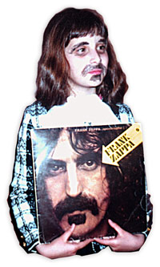
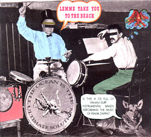
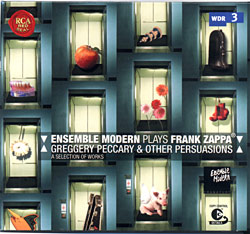

Заппа'zУх!Ой!
русский более или менее регулярный бюллетень для поклонников американского композитора
Frank'а Vincent'а Zappa'ы
Выпуск.49 (28 Мая 2004)
Здрасьте, я ваша тетя!
Лет восемь назад моя старшая дочь решила нарядиться Фрэнком Заппой.

Понравился он ей. Мохнатый и с усами. Не то, что папа. Бобер. Стриженный и бритый. Каждый день на работу ходит. Не рассмотришь как следует. А Фрэнк, пожалуйста. Образ. На открытом доступе. Дома. Во всех видах. На стенах и полочках. Можно скопировать.
Приходит папа с работы. Ушастый. То есть, я. А его ждут. Девочка. В гриме. Два часа томилась. Очень хотела поразить. Приятно. Пришлось бежать за пленкой в магазин. Увековечивать такое чудное мгновение.
Любви прекрасные порывы.
И вот вспомнилась мне эта славная история. Семейная. Как-то сама собой. Пару дней назад, когда пришла вдруг посылочка. Мелкий пакет. Из города Екатеринбурга. От Кирилла Турицына.
Кирилл - лидер инструментальной surf-банды The Spoilers. "Бракоделы" по-нашему. По-хорошему. Или "Вредители" в суровой терминологии военного коммунизма. На самом же деле они - снобы. Эти "Поганцы". Пшюты данспола. Не поют. Никогда. Принципиально. Все делают сурово. Молча. Как настоящие уральские ребята. Мужики. И пиво пьют. И музыку лабают. Вот с таким вот строгим ритмическим рисунком.
mm-BA-DA mm-BA, mm-BA-DA mm-BA
Задорную и заводную. И не только на границе Европы и Азии. А, вообще. Много их таких. Поющих про себя. Везде, где распространяются звуковые волны. От Австралии до Земли Франца-Иосифа и обратно через Терра-дель-Фуэго. Красота! Танцуют все.
И переписываются. Время такое. Интернет. Yahoo! Списки рассылки. Есть свой и у молчунов с электроинструментами. Ребят, что надо. Специальный! С паролем и регистрацией. Cowabunga. И вот как-то один уполномоченный ТУМ-ТУМ спрашивает других уполномоченных ТУЦ-ТУЦ. В свободное, конечно, от
пум-ДА-ПА пум-ДА, пум-ДА-ПА пум-ДА
время. Просто интересуется. Из чистого любопытства. Мериленд. США.
From: "Dave Wood" <surfmusic@z...>
Date: Wed May 28, 2003 8:17 pm
Subject: Zappa surf covers ??
I know this subject has been covered in the past, but can anyone think
of any bands who have done surf covers of Frank Zappa/Mothers tunes?
I'm aware of Pollo Del Mars "Take Your Clothes Off" and I know at least
one other band has covered that song as well. Any others?
А с другого берега, из Англии, тут же откликаются. Товарищ боевой подхватывает мысль. И творчески развивает.
From: "Cordelia" <cordelia@s...>
Date: Thu May 29, 2003 1:56 pm
Subject: Zappa surf covers
We do "Lumpy Gravy" too.
Thinking about it, Zappa's music would make a fine surf-tribute type CD.
Anybody have any idea if there would be enough bands interested in
taking part? Our label might release it if there were.
Alan Jenkins
The Thurston Lava Tube

И собственно процесс пошел. Закрутились колеса. Полилась песня. Хоть и без слов.
тым-ДЫЦ-ДЫЦ тым-ДЫЦ, тым-ДЫЦ-ДЫЦ тым-ДЫЦ
С миру по нитке стал собираться диск. Цифра к цифре. В принципе неплохо. Никто не в обиде. Танцуют все. Хотя, конечно, диско-версия вышла бы много смешнее. Но это был бы постмодерн. Шиворот-навыворот и гадость. А тут все здоровое. По правде и от души. Поскольку, каждый неразговорчивый surf-фанат носит в сердце своем кусочек We're Only In It For The Money. Как выяснилось. Пару тактов "Heavies" by The Rotations из Nasal Retentive Calliope Music. Ну и финал Lumpy Gravy. Безусловно! Тот же период.
Кукамонга forever!
Она же
Cowabunga и прочий ДЫЦ-ДЫЦ-ДЫЦ.
Любви прекрасные порывы.
Короче говоря, переоделись ребята, кто Заппой, кто Матерями, и малость походили в классном прикиде. Уважили. Отлично. Один раз послушать можно. И, кстати, наши "Вредители-Поганцы" во главе с Кириллом лучше всех смотрятся в паппином парике. Честно. Играют и не заморачиваются. Что, в общем-то, вдвойне приятно.
Good.
Но совсем уже замечательна сходная тенденция на другом полюсе ритмических рисунков. Фигур и вариаций.
Это когда не шорты меняют на штаны, а смокинги поверх футболок надевают. Наши старые друзья. Неутомимые Виртуозы Германии. Франкфурта и Кельна. Ensemble Modern.

Исполнили свое самое заветное желание. Горели. Еще со времен Yellow Shark. Чудной затеи 1992. Очень хотели приделать к носу пятачки, а к копчику - веселый хвостик. Нарядиться розовыми хрюшками и исполнить. The Adventures Of Greggery Peccary.
Все не получалось. Хотя и репетировали. Шли трудным путем. Кстати, описанным подробно лично мамашей Гейл в буклете новой пластиночки EM. И все-таки собрались. Подготовили к EXPO 2000. Целую программу. Представили в Ганновере. Сыграли.
А теперь и мы, удаленные во времени и в пространстве, можем послушать. Во всех средах распространения звуковых волн. От Приморья до Поморья. От Порта Находка до порта Мурманск. И не один раз. Потому что супер. Вещь. Честно.
Greggery Peccary And Other Persuasions
Энтузиастам с карточкой Виза порекомендую только учить немецкий. Не пользоваться www.amazon.com. Там какой-то шуточный вариант выдают. Ну очень уж дадаистский. Седьмой номер The Dental Hygiene Dilemma идет вне программы вслед за десятым - The Adventures Of Greggery Peccary. Диск с секретным треком. Запповидный. Такой, как оказался у меня.
Что весело, конечно. Но только один раз. А поскольку слушать предстоит через день, а то и чаще, берите музычку в правильной последовательности и без ненужных пауз. От германского производителя. Она того стоит.
Любви прекрасные порывы.
А Си-Дюк серфистов, кстати, ребенок изъял. Это который теперь уже под метр семьдесят. И губы красит, и глаза. Ежедневно. Но не для того, чтобы на Заппу походить. Я так подозреваю. Пенек замшелый. Старый черт. Иного, мне уже неизвестного сходства ищет. И слава Богу!
Искренне Ваш, Владимир Советов
http://www.arf.ru/
| Домой | Заппа'zУх!Ой! | Поиск | Хозяин |